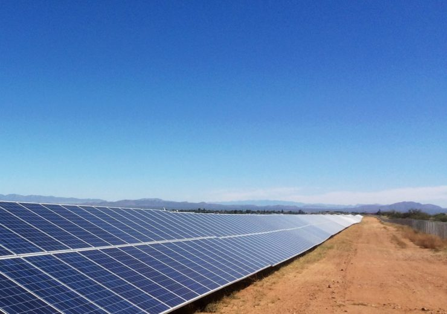
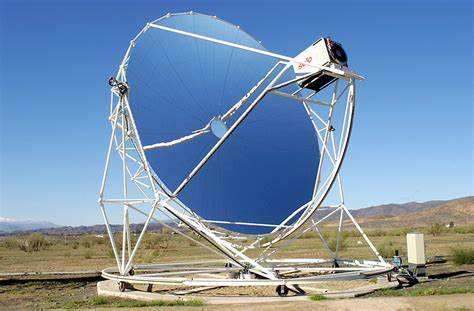
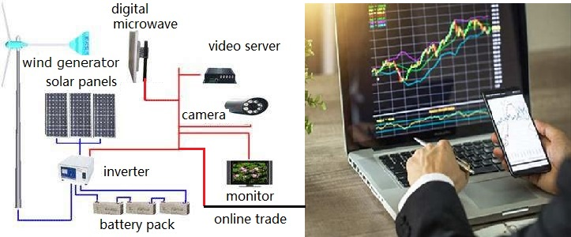
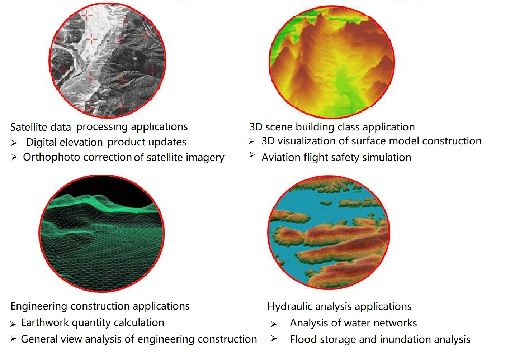
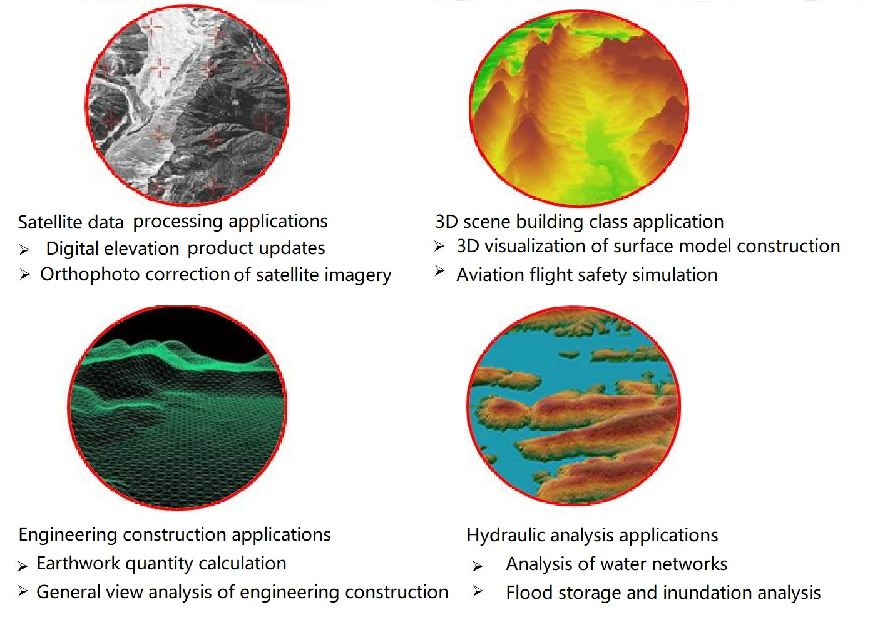
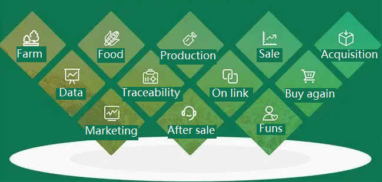
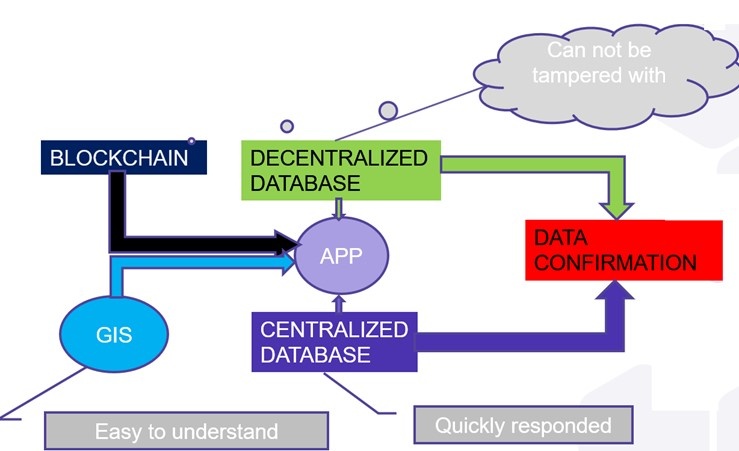

Services Overview
Clean Energy Program
In the field of clean energy, WUHANGTECH can provide a variety of technologies and services, and their combinations. WUHANGTECH has conducted in-depth research in the fields of wind field, thermal field analysis, support design, installation, drive and other fields, and has obtained two related patents. Australia has abundant solar and wind energy resources. WUHANGTEC can build itself, or provide technology and services for other organizations. In addition, WUHANGTECH also plans to establish an online monitoring and sales platform. The platform can provide a way for small users interested in protecting the environment to get involved. And through this platform at the same time get online detection of the invested assets and flexible exit opportunities
Figure 1 Solar photovoltaic panels
It can be widely arranged in arid, deserted, sunny and remote areas.

Figure 2 Stella solar generator set
This equipment is more expensive and can be deployed in the suburbs, facilitating management and efficient use of space.
Figure 3 Wind energy generator set
This equipment can be deployed in places with abundant wind energy. Wind power can make up for some of the shortcomings of solar power generation, such as at night, during the rainy season, and in winter, solar energy, and even hydroelectric power is not efficient.

Figure 4 Clean energy generation, transmission, storage, monitoring and trading systems
In addition to self-built and contracted clean energy power plant projects, the company is preparing to deploy an online monitoring and trading platform using more mature VR and GIS technologies. Users can invest in their own new energy business as if they were buying and selling stocks.
Big data business
WUHANGTECH's big data business is divided into customized services and general services. Customized services are mainly based on multi-source remote sensing, aerial surveys, and other mapping methods to obtain data resources, to assess natural resources such as land, water conservancy, fisheries, and mining. When big data is used in cities and communities, The GIS system established by combining 3D modeling and data mining can provide data services for the construction of smart cities and smart communities. WUHANGTECH can also produce general-purpose products to provide licensing services for customers with big data resource analysis needs.
 Figure 5 Monitoring of seasonal changes in lakes and landforms using satellite remote sensing data

Figure 5 Monitoring of seasonal changes in lakes and landforms using satellite remote sensing data

Figure 6 Application scenarios of multi-source remote sensing data
 Figure7
Resources profiling with integration and fusion
technoligy by arrary of devices
Figure7
Resources profiling with integration and fusion
technoligy by arrary of devicesFigure8 Smart Comunity
Device installation
In the early days, WUHANGTECH subcontracted the installation projects of central air conditioning equipment for some large buildings, such as Benxi Wanda Plaza, Shenyang Seven Star Water World, etc. These projects provide valuable lessons for subsequent Clean Energy Initiatives.
Figure 9 Benxi WANDA Square
Agri-Food traceability system
In Australia, agricultural products, which are one of their pillar industries, with high yield and good quality, are very popular in overseas markets. But consumers are most worried about buying fakes. Therefore, if the Agri-Food in Australia can be easily identified, the product traceability will be of great help to maintaining the reputation of Australian Agri-Food and improving consumer confidence. Because the blockchain technology is transparent, decentralized, and cannot be tampered with, if the technology is used on Agri-Food traceability software, it has many advantages for product traceability to safety, fairness, and reliability. However, this technology uses a decentralized algorithm, and data authentication takes more time, which is a challenge for consumers and developers. We have a perfect solution for this.
Figure 10 Modular division of the Agri-Food system
Wuhang Technology roughly divides the food traceability system into farm management and monitoring, food management, production management and monitoring, sales management, data collection management, big data analysis, traceability management, on-chain management, re-purchase management, market management, after-sales service, and fan management. Most of these management modules are based on GIS, virtual reality technology, multimedia and blockchain technology to achieve more intuitive, detailed and immutable features in the form of data presentation. The realization of these functions not only depends on software technology, but also requires hardware technology to support it. Early in the project's run, WUHANGTECH would charge enterprise users a little bit of cost of hardware, which is similar to a PDA scanner. When the size of the customer's market is large enough, the company will charge a license fee for the use of the system.

Figure 11 Schematic diagram of the agricultural product traceability system
The diagram shows a flowchart of the traceability system. It includes origin, growth process, quarantine agency, production processing, management department, logical transportation, grocery store, consumer, online traceability
Figure 12 Agri-Food Traceability System Protocol